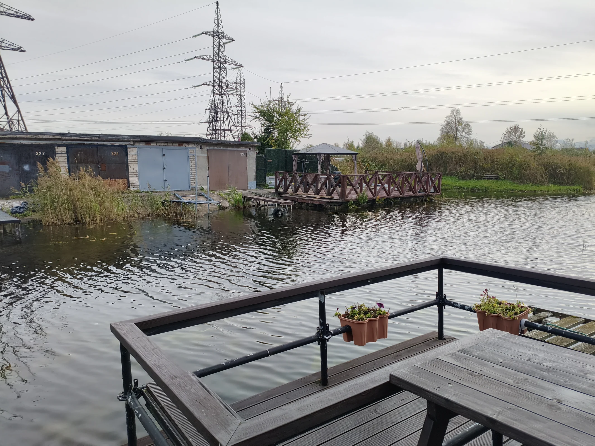

Мероприятия
Встречи остаются в памяти.
Здесь мы собираем их истории.
Архив сообществаУ каждой встречи
У каждой встречи
есть продолжение.
Мы собираем первые материалы для этого раздела. Если у вас есть фотографии или история мероприятия в Кулгу, напишите нам.
Поделиться историей ↗